Data Integration
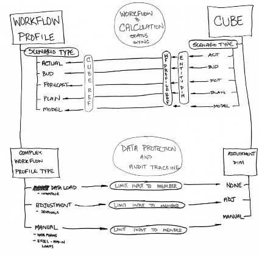
The ability to consume data from any data source, and load or integrate data into software, is probably the biggest problem most software companies do not consider when creating an application. Most software packages usually only have one way to load a data file, or force a specific format (in order to get a file into the system, or a separate product), and there is usually only one way to get the data out in order to reuse the data. That concept really changes with the use of OneStream.
With OneStream, you receive a very powerful toolbox to help manage and coordinate all your data.
You will learn in this chapter there are many different options to get data into the OneStream system, and that you can reuse and leverage both the source and target data that was created by OneStream. This chapter will not cover using the data parser and Business Rules, but cover the concepts of how to get and use the data into OneStream. OneStream has a wide variety of tools to load and map any dataset, and there is virtually no limitation on the type of data that can be consumed and analyzed or reported in OneStream.
Not only does OneStream help coordinate the disparate data sources, but it becomes a data source itself to reuse and repurpose data for other processes such as Account Reconciliation or other reporting or analysis needs. MarketPlace solutions such as People Planning allow you to collect data for Planning and place it into tables consistently, instead of having hundreds of different Excel files doing different functions. Account Reconciliation allows you to use the same data for the trial balances to do the reconciliations. OneStream becomes a complete ecosystem of data.
Data Integration
Data Quality
The creators of OneStream have been at the forefront of Data Quality since the early 2000s. UpStream Software was created by OneStream’s founder, Tom Shea, to load Hyperion Enterprise and provide an audit trail and mapping tool. UpStream gave everyone a consistent, repeatable process to load data, and provided gratification in the form of a digital ‘fish’ when they completed a step. Why a fish(?) you may ask. Because the data flows upstream from the local General Ledgers to corporate, just like a fish swims upstream.
UpStream was also a tool for both accountants and complex integrators. While other ETL tools required consultants and others to rebuild the same basic platform repeatedly to get data into systems, UpStream already had the Workflow process done, and the steps were easy for basic accountants and Administrators who wanted to bring up new datasets quickly. There were products from Hyperion that would take a file and map it and prepare output, but – in that process – you lost all visibility as to what the output data used as its Mapping Rule, and how many line items were summed into the final amount.
In 2006, with over 300 successful customers and the need for an audit trail – required by auditors and customers – Hyperion purchased UpStream Software and rebranded it Financial Data Quality Management (FDM). The main problem FDM was tasked with solving was the moving of data between Actual and Forecast. How do you take data from Hyperion Financial Management (HFM) and move it into Essbase, and take data from Essbase and move it back into HFM? This disconnect was part of the problem that OneStream wanted to solve and has solved with one platform of OneStream. You can use Extensibility to have different levels, and metadata in Actual and Forecast, and have everything in one product. You no longer have to group and maintain two different products with two different metadata structures.
Early in 2010, when building the platform from the ground up, the Data Quality process was reimagined. With years of experience, consistent problems could be solved easily by using settings and making them part of out of the box functionality for a basic Administrator to use and consume data files. The common tasks that required Scripting Engine assistance were reimagined to be solved with settings.
The power of a Scripting Engine still exists, and is still used as a solution to solve the most complex problems. Most of the problems were solved because data resided in one system and didn’t have to go back and forth between separate Consolidation and Planning systems.
Data Integration
Staging (Data Quality Engine)
All of the data being loaded into OneStream starts out in a file, in a system, or in a database table. The challenge is to get that data out of disparate sources and into one common system. The Data Parsing Engine of OneStream consumes the data from the source files and systems, and places the data into staging tables. The staging tables have the consumed source data, the mapping used, and the target Dimension. These tables are the basis of the audit trail and the drill back. The data is cleansed to be in a consistent format for consumption by the Cube, or used in other areas of the product such as reporting.
When FEMA gets ready to help people after a natural disaster, they have staging areas –places they work from to coordinate and manage the response. OneStream does the same thing by having a staging area, which we will refer to throughout this chapter as Stage.
The source data that is prepared and staged, and outputted in this system, can be reused in any format to solve any complex data problem. The aggregation of the source data can then be reused for another purpose. One process needs data aggregated one way, but the Financial or Planning dataset needs the same data aggregated in a different way. It’s the same data just looked at in a different slice.
Through every stage of data consumption, there is a complete log and audit trail that satisfies the completeness objectives of any audit system.
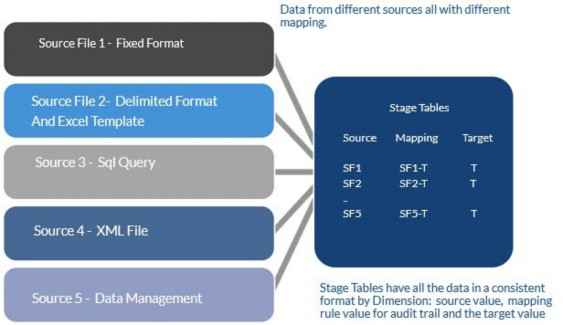
Figure 6.1
Data Integration
Non-Stage Data Tables
Not every record of data gets processed through the Mapping Engine. There are a number of datasets for other solutions that are kept outside the Cube in data tables created by solutions such as People Planning or BI Blend. (It is an option to design a process where OneStream can write to and from the Data Quality Engine.) Data collection tables are just database tables that are created to consume data. Excel files can be set up to load these datasets as well. This process is built into solutions, and they will come with predefined Excel templates for loading the data. There is no mapping of these items except for the Type of data matching to the column. The same theory applies to staging as we create areas to prepare data for use as a consistent data structure.
Data Integration
Origin Dimension
In order to understand how data is consumed by a OneStream Cube, it is necessary to understand the Origin Dimension. The Origin Dimension is the way OneStream segments the data for each Entity – into separate buckets – by three Types of dataset. This Dimension combines the concepts of data protection and data layering and isolation. The Origin Dimension acts as a barrier to protect how data is loaded in different Forms. Data loaded through import does not write over data in the Form’s Origin Member by isolating the three groups.
Import – Data imported from a flat file or query or an Excel Template.
Forms – Data inputted manually or via an Excel template or an Excel add-in.
Journal Entries – OneStream Journal Entries that can be inputted manually, used as templates, or loaded through Excel.
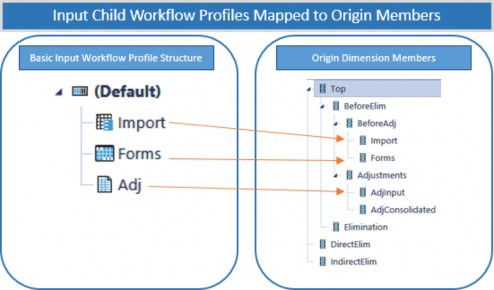
Figure 6.2
Data Integration
Assembling the Data Sources and Considerations
For any OneStream project, it is extremely important to understand that data needs to complete the project’s objectives in the design document. Analysis of the data sources is required to make sure they can provide the data that the Cube design requires. As the model of the Cube is designed, the Cube should be at least 90% complete before mapping and work on the data integration begins (e.g., the work in the Stage should not begin until the prior work is substantially done). That’s not to say there will not be changes. There are always changes to a model! Your job is to minimize these changes with a thoughtful and thorough design process.
After the design document is complete, there are four major considerations when starting the data integration project.
Data Integration › Assembling the Data Sources and Considerations
Inventory Files and Sources
Inventory Files and Sources are typically part of the project where a lot of the unknowns reside:
How does each group prepare the data?
How much of it is a system?
How much is collected manually?
In managing a project, the pitfalls are in the details. It is extremely important to put together an inventory and get as much information as possible from all parties. Samples of the data files, the queries, and the data itself, for example. It is important to understand the analytic model to make sure the data provided can satisfy the objectives of the reporting Cube. The inventory should contain ledger information, type of data, and responsible party. The customer must give you the file or the query to prepare the data. You can typically find some economies of data sources and mapping in this exercise. Do the ledgers across the company use the same Account numbering scheme? Are the output formats the same structure? A company grown by acquisition typically has a wide variety of data sources that don’t match up.
The most important field of any data source is the Amount. When reviewing a dataset, the Amount is the most important field in any file format that is used and will determine if a record is accepted or rejected. Amount(s) can be in a single column (tabbed format) or a matrix format. OneStream can easily read either type of file – out of the box – without Business Rules.
Data Integration › Assembling the Data Sources and Considerations › Inventory Files and Sources
Single Column (Tabbed)
| Sales Product | Amount |
|---|---|
| Golf Club | 1,000 |
| Golf Shirt | 1,500 |
| Golf Balls | 100 |
| Golf Bags | 800 |
Figure 6.3
Data Integration › Assembling the Data Sources and Considerations › Inventory Files and Sources
Matrix Format
| Products | Store A | Store B | Store C | Store D |
|---|---|---|---|---|
| Product A | 23 | 45 | 31 | 25 |
| Product B | 87 | 23 | 55 | 38 |
| Product C | 64 | 56 | 62 | 26 |
| Product D | 37 | 32 | 91 | 8 |
| Product E | 93 | 35 | 54 | 43 |
Figure 6.4
OneStream can use any file produced by a system. There is generally no reason to pay a programmer to pull data into a specific file format for OneStream.
OneStream is not just limited to files; the more common practice now is a direct connection to pull data in real-time. The ability to load from a direct connection is more accurate because you can refresh by just pushing a button. The file is limited to the last time the file was run. If changes are made, the file must be rerun and then reloaded, but with a direct connection, the consumption is instantaneous. OneStream is a pull system and will pull data from databases, etc. We do not allow for a push of data to our data tables.
There are many different types of data to be loaded in OneStream. The dataset should be complete for the subject the system intends to analyze. Sometimes, a Trial Balance might not be a complete dataset that includes all the data needed to generate a Cash Flow statement. An example of a deficiency in a Trial Balance might include Fixed Assets which are not detailed in the Trial Balance. The transactional detail could be loaded, or an input Form could be used to separate the detail of the Account – showing additions, disposals, and transfers.
Examples of data sources which are included but which are not inclusive:
Trial Balances or Trial Balance by Department
Income Statements by Department or Geography
Accounts Payable Detail
Accounts Receivable Detail
Fixed Asset Details
Forecast
Vendors
Sales by Region or Product
Products by SKU#
| Tip: Source files or Trial Balances should be in natural sign of Debit and Credits. |
Makes it very clear what value is a debit and a credit
The file balances to Zero and can be easily proven with a rule
Can use a derivative Translation Rule or a Balance Account in OneStream to test mapping for signs equals zero
Data Integration › Assembling the Data Sources and Considerations
Historical Data
The second major data integration consideration with any project is that historical data is always an unknown and a challenge to reconcile. As part of the inventory, it’s important to know how the data is going to be loaded (e.g., which method or data source).
Where is that data source coming from?
How much history is going to be reconciled?
Two years of historical data is typical in an implementation project when working with only a few sources and a straightforward mapping. As I have learned – over and over again – there are many special ‘one-time’ cases. You need your customer’s involvement and participation in this to tie out the data. This is a good task for the customer to focus on, and take responsibility for, as they know their data and results better than a consultant.
A common issue is that the customer has their normal day-to-day job, and your needs can get in the way. Ask your customer to provide dedicated resources for this process; work as a team but make the customer responsible for approving and reviewing the data tie out. You will probably need to leverage OneStream Excel templates in a lot of these exercises to compare and tie out data.
Data Integration › Assembling the Data Sources and Considerations
How much Data?
The third major data integration consideration in any project is a balancing act on how much data is in the ledger and how much data is in the Cube.
This requires discipline by the designer of the Cube not to recreate everything that is in every ledger system. The Cube should be summarizing data and should not be a data warehouse of every possible product combination. There is the capability to drill back to a source system. If you have set up a direct connection, then it can drill back to the source items and see what makes up a number.
Customers tend to want to make a data warehouse out of a Cube, but there is no need to make a Cube a data warehouse. If everything has one-to-one mapping, that might be a clue that the ledger is being fully replicated. There isn’t a need to replicate the ledger or every single ledger the customer owns. OneStream is not a General Ledger system. There are alternative solutions, including drill back or Analytic Blend reporting, so that the Cube is not overburdened as a data warehouse. OneStream can report off data that is not contained in its ecosystem. It can create a data adaptor and pull that information into a Report for presentation purposes.
Data Integration › Assembling the Data Sources and Considerations
Performance of the Data Load
The fourth major data integration consideration is the volume of data and tuning behind processing times and mapping. What works best for the data file, mapping, and scripting is sometimes a bit trial and error. Loading 2,000 records with mapping is different to loading 1 million records with mapping.
There are several things to consider when looking at performance.
Data Integration › Assembling the Data Sources and Considerations › Performance of the Data Load
The Quality of the Data File or Query
Sometimes the query is a stored procedure, which is probably very tight; and sometimes the query might be a manual query that is not as efficient. We have seen queries that try to do math in the query, and they may (or may not) be the answer. There might be economies in massaging the query to become more efficient.
Data Integration › Assembling the Data Sources and Considerations › Performance of the Data Load
The Complexity of the Mapping Rules
This will be covered in more detail later in the chapter when discussing mapping processing costs.
Data Integration › Assembling the Data Sources and Considerations › Performance of the Data Load
Spreading the Data Load
With large data record sets, it might make sense to separate the data into smaller chunks of data. One data load with 1 million records could take ten minutes because it’s a sequential data load. The parser is sequential, but by breaking it up, the parser can be used by multiple data load and Workflow processes. The same data could be loaded in two minutes by breaking it up into five separate groups of records.
Data Integration › Assembling the Data Sources and Considerations
Working through the Problems
Both Data Sources and the mapping process, during any build, involve an element of trial and error.
The first item to concentrate on is getting the data read. For that, you need a basic map. The Import function on the Workflow does both imports and mapping. This requires a data source and a mapping. The basic transformation map for View, Scenario, and Time, and a Transformation Rule profile with at least the Dimensions being loaded from the data format having a blank profile for all the other Dimensions being used, is required before a data file can be loaded.
It’s okay not to do all the mapping at first. Reading data sources and mapping go together, but once you get the data source working, it’s easy to modify the data source to become tighter.
Look at the data that is being imported into the Stage. If you have a 10-digit string Account number such as 2300028932 – 23000 is the Account, 28 is the geography, 932 is the Product. If you only need the Account information to map, it might be good to only take the first five digits and make the mapping easy as a one-to-one.
But if the Dimension needs the other information, it also might be good to break the Dimension up and add separators such as 23000_28_932. This will allow some flexibility with wild card mapping.
Maybe the geography isn’t needed, though, and 23000*_9* gets mapped to a specific Account. The separators can help the mapping by saying every Account with 23000 and a product 9 goes to a specific Account.
Sometimes, you just have to root around and try things out to see how data and mapping are structured, and the number of records. These combinations change all the time during build. Look to make things easy but adaptable for the future. An alternative solution could be to use a Composite Mapping Rule that looks to the source of the Product Dimension or as a lookup table. Those solutions may make sense based on the volume and complexity of data. There is always more than one way to solve a problem.
Large datasets that contain more than 1 million records may require some adjustment to the Workflow Profile setting:
Cache Page Sizeset to2000Cache Pages In Memory Limitset to2000. This combination allows more Cache Pages to be processed in memory. You may have to adjust settings to find the right combination based on hardware availability.
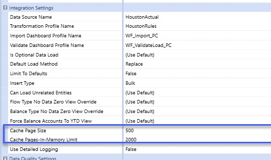
Figure 6.5
Data Integration
Data Load Basics of Analytic Blend
All the data resides in OneStream and can be used (or report) off a data blend.
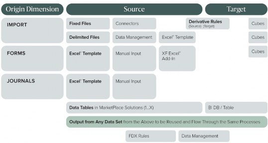
Figure 6.6
The table above is a snapshot of the entire ecosystem, and how to get and reuse data in OneStream. Each Origin Dimension has its option to load data.
Data Integration › Data Load Basics of Analytic Blend
Data Source Types
Fixed files – Standard repeatable data files that have text items in specific segments of information in the file.
Delimited Files – Files that have data separated by items such as a comma, semi-colon, or another character.
Connectors – Format that connects to a database, an ODBC connection, or consumes a file prepared by a connection (such as XML) from a Rest API.
Data Management Export Sequences – Format that pulls data from other areas of OneStream. For example, pulls data from a MarketPlace solution or another OneStream Data Cube.
Excel Template – This could be a manual input or a link to one or more Spreadsheets. Can be used for Imports, Forms, or Journals.
Manual Input – Creates a Form for data to be inputted manually. This Form can be downloaded from a Form in Excel and inputted.
Excel Add-in – This could be a manual input or a link to one or more Spreadsheets; it uses formulas to load to specific data cells.
Derivative Rules – Creates additional records that can be used for checking a trial balance, creating offsets or allocations. The rules can be done on source data or target data after mapping.
OneStream Cubes – Data prepared in the Cube for Consolidation and eliminations, which can be extracted and reused.
MarketPlace solutions – Data in these add-on platform solutions can be extracted and put into a OneStream Cube.
BI/DB Tables – Specific tables set up for BI Blend.
The OneStream Ecosystem embraces all this data, which can be reused and consumed for other projects and other purposes. Indeed, there is no limit to the data that can be used and reused in the ecosystem!
Data Integration
Data Parser and Business Rules
A complete book could be written detailing data parser uses and the unlimited extended capability of Business Rules, but this book will leave that to the training classes and a future book. The data parser in OneStream changes based on what type of flat file is being used. Whether fixed or delimited, it has out of the box capabilities to do tabbed and matrix data loads without Business Rule scripts.
Business Rules allow a full Scripting Engine to complete complex tasks in the dataset that cannot be done out of the box. The next few pages will summarize the types of formats.
Data Integration › Data Parser and Business Rules
Fixed Files
Fixed files typically have some sort of header(s), have data spaced out over the file, and are generally easy on the eyes. It’s usually a system Report of some kind that is created in the source system and printed to a file. Business Rules can be applied to complex fixed files to extend the capabilities of OneStream software.
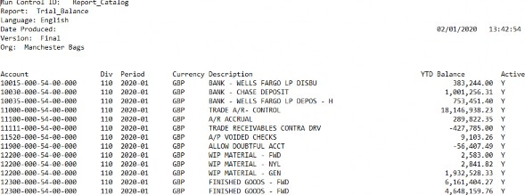
Figure 6.7
Data Integration › Data Parser and Business Rules
Delimited Files
Delimited files are just data separated by a character. Be careful that the delimiter does not have a use/function in a field, though. Sometimes a customer name or an Account name could be using a comma or one of the other delimiters in the name. Take a company name like New Company, Inc. The data field could have a comma and a period in it, and if used as a delimiter, it can throw off the entire file.
Take the numbers in the following example. This comma-delimited file was probably generated by an Excel file as the numbers are set in double quotations. The Parsing Engine of OneStream can recognize this, and there won’t be an issue with the additional commas inside the double quotation marks. OneStream will read them as dollar amounts. Common file reading problems are addressed in a lot of OneStream’s out of the box functionality, and Business Rules applied to complex, delimited files can extend the capability of the software.
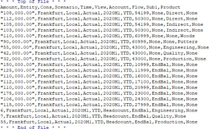
Figure 6.8
Data Integration › Data Parser and Business Rules
Connectors
Connectors are used to connect to database tables with SQL queries. ODBC connections, XML files, and a host of other possibilities are applicable. Below is a brief sample of some data from a
QuickBooks trial balance. These formats require the use of Business Rule scripts. The use of Business Rules can read any dataset, and consume it based on fields.
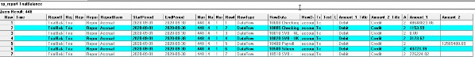
Figure 6.9
Data Integration › Data Parser and Business Rules
Data Management
Data management jobs are internal OneStream processes that can pull data as a source from another area of the product, such as a Cube (plus data that was calculated by the Cube), by creating data management profile steps and sequences.
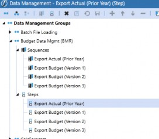
Figure 6.10
Data Integration
Additional Data Input Sources
Data Integration › Additional Data Input Sources
Excel Templates
For a lot of companies, Excel is the software that captures and collects a lot (if not most) data. Excel is familiar to just about everyone, and Users can easily prepare data in Spreadsheets. Data can be consumed by placing information into a template with header tags and a range name, and then be loaded through a Workflow. The Workflow must set the Allow Dynamic Excel Loads property to True in order to import Excel data to the Stage. But, based on the table, data can be loaded to other Members of the Origin Dimension. Excel files can have multiple range names in a file and multiple tables.
The column headings can be done one time on a top row and applied across all the records.
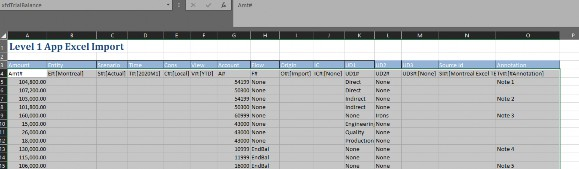
Figure 6.11
The Excel format is set up with tags on the first line and range names. The range names have specific meanings.
| XFD | Data load to Stage |
| XFF | Form data |
| XFJ | Journal data |
| XFC | Cell details |
Figure 6.12
Data Integration › Additional Data Input Sources
Forms
Forms are used for manual inputs. Sometimes, some information is not included in the source data or needs some detail. The example shown here is just for Headcount. The creation of Forms and their use in Workflow will be discussed in another chapter.
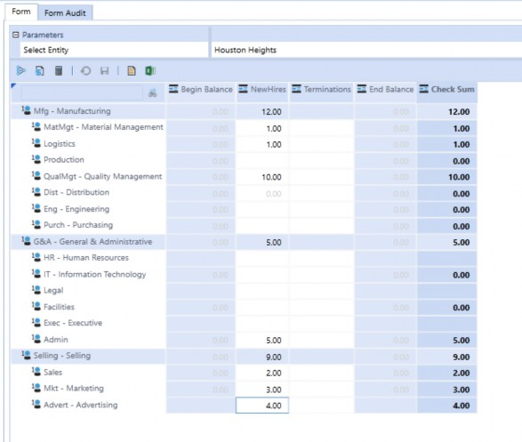
Figure 6.13
Data Integration › Additional Data Input Sources
Adjustments (Journal Entries)
One best practice is to put all Journal Entries into the source system and reload, but in some cases, the ability to have Journal Entries in the system aids tasks like consolidating entries that have no ledger home.
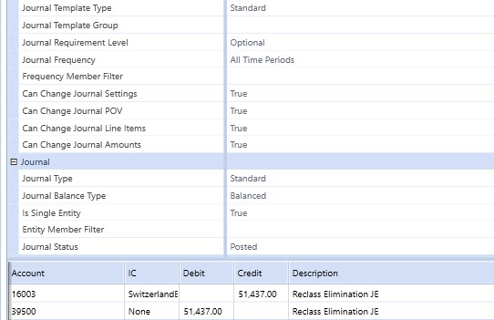
Figure 6.14
Data Integration
Workflow Data Protection and Layering
The concepts of layering and data protection are used in OneStream to separate and close off data areas from one another. Reloading a Data Unit is typically based on Entity, as an Entity is usually the main way that data is loaded into a Cube.
A number of concepts such as Workflow, data sources, and Origin Dimension come together in this diagram to show how they all work together. Data (in the Import Dimension) is isolated from the Forms and the Journals.
Data in the Import Dimension can be isolated and protected by the source ID and/or the Workflow channel. The Workflow channel can use an Account-level Dimension Member – such as Product – to help separate the Data Unit into an isolated data load.
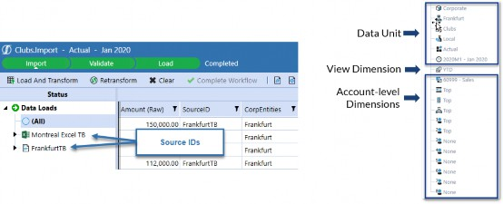
Figure 6.15
The Source ID is a field in the Data Source that allows a field to be tagged to determine how to reload data. The Workflow channel can be another tool used to parse, based on one of the Account-level Dimension Members. At one company, each plant produced more than one product and had different finance people for each product (and they planned separately). The Workflow chapter will cover the use of the Workflow channel, adding another layer of data protection.
A commonly reused Source ID is the name of the data file. The next figure is an example of a snippet editor which can be added to the system from the MarketPlace, and which can extend the capabilities of the Business Rules with pre-written code snippets.
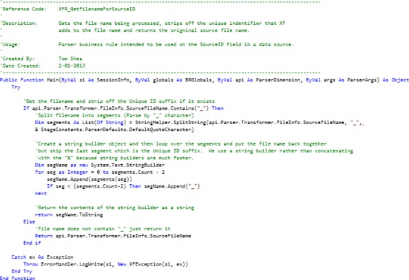
Figure 6.16
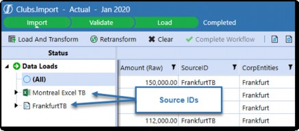
Figure 6.17
This figure shows how a single Entity in a Workflow can be carved up to reload and segment data for the Entity. The Origin Dimension creates a separation of data.
Data reloading can be separated by different Source IDs in one Workflow and have multiple channels.
Data Integration
Origin by Layer of Data Protection
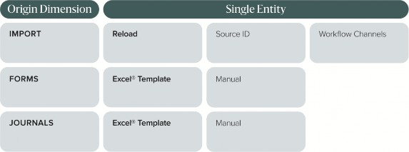
Figure 6.18
Data Integration
Organizing and Naming Convention
With data sources, Business Rules, Translation Rules, Form Templates, and Journal templates, it is important to think about naming conventions thoroughly. Make any naming convention consistent and understandable. Use prefixes or suffixes. Because this platform can create Cubes and share Dimensions from the library, certain parts can be reused and placed in a profile and used again and again.
A data source based on a ledger system can be reused if it’s the same ledger and format. The same format can be reused multiple times instead of creating one by Entity, or the same query could be used by having a dynamic change based on some Workflow variables that will substitute variables into the query to pull differently based on Workflow. We can use substitution text strings in the Workflow to change how a query gets used.
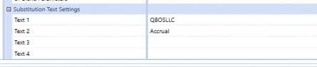
Figure 6.19
There are also some global Transformation Rules that can easily be reused. The Dimension Rules for Scenario, Time, and View should be named as Global because they can be reused over multiple Cubes. These three Dimensions can only have one-to-one mapping. So make it simple, if you can, and only have one group for each one if they don’t overlap with different strings. The mapping is usually a simple Actual to Actual. Be careful about Dimension mapping, though; if there is mapping that can be reused, then name it accordingly so you can add it to more than one profile.
You can rename certain items without penalty. As you continue to build your application, and want to keep consistency in your naming convention as well as naming convention changes, you can modify some of the items easily to adapt to your naming convention. It’s important to understand what each piece of the puzzle is.
| Item | Rename/Locked | Naming Example |
|---|---|---|
| Data Sources | Rename | Entity (Michigan) , Workflow (Cleveland Plant) , General Ledger (SAP, Sage, etc.) |
| Transformation Dimensions | Rename | Global Scenario, A_Sage A_Cleveland |
| Transformation Rule Profiles | Rename | Entity (Michigan) , Workflow (Cleveland Plant) , General Ledger (SAP, Sage, etc.) |
| Parser Business Rules | Locked (could change name and recreate but would have to be reattached) | XFR_Sage_Account XFR_Cleveland_Product |
| From Template Groups | Rename | Data Entry (Data Entry) |
| Form Template Profiles | Rename | DE_GL |
| Forms | Locked (would have to rebuild profile) | A_AR , B_PPE , C_LTDebt |
| Journal Template Groups | Rename | JE_Elimination |
| Journal Template Profiles | Rename | JE_EntityA |
| Journals | Locked (would have to rebuild profile) | JE_IntercoElim |
Figure 6.20
Data Integration
Attributes
There are 13 mappable Dimensions, but there are also extra fields to assist in capturing other source data that can be used for other purposes. These include Label Dimensions, 20 Attribute Dimensions, and 12 Attribute Value Dimensions. These fields can be activated on the Cube and used for collecting source data; while not important for the data Cube, they could be used to analyze and report on records such as SKU numbers or product numbers.
Data Integration
Business Rules
Business Rules enhance the ability to read a file. If a file can be read without them, don’t use them unless they benefit the mapping process. Business Rules might be used to carve up a string, or join strings together when combining items for mapping. Use a – or _ to separate items.
Data Integration
Transformation Rules
Transformation Rules are rules that map a source Member to a specific target value. There are different types of Transformation Rules and usage examples.
Think about data and needs before mapping begins. Usually, mapping is provided by a group that doesn’t have mapping expertise but who can get lucky if the Users have experience or proper training. Typically, there are economies that can be gained by reviewing the types of mapping and figuring out the best use of mapping. The following table is just a recap of the different types of mapping available.
Derivatives are additional rules that can be used to create records as check figures or supplementary records for mapping. Some examples include: a sum of all records to make sure the trial balance balances, testing the sign of a record or records, the allocation or creation of offsets. Using derivatives is only one way of allocation; there are other allocation methods that can be done at the target.
| Transformation Rule Type | Definition | Example |
|---|---|---|
| Source Derivative | Applied logic & math to inbound source data | Does Trial Balance equal zero? Does an asset go negative and need to be reclassed as a liability? |
| One-to-One | Explicitly mapped Members (Scenario, Time and View can only use these rules) | Actual -> Actual 05/31/2021 -> 2021M5 Monthly -> MTD 23099 - > 23000 |
| Composite | Supports mapping ‘slices’ of Members such as a product | A#51000: UD2#H* to the UD1 Member of Sales |
| Range | Map a range of Accounts from A to Z to = target. | Map Accounts 21230~21239 to 20300 |
| List | Map a delimited list of Accounts to one Account | Map Accounts 41137;42642;42688 to Account 60100 |
| Mask | Wildcard mapping that takes the place of one character (?) or multiple characters (*) | Map Accounts that start with 86 (as 86*) to 41000 or *84*7* to 41000 Account starts with any one character, then 86 (as ?86*) to 42800 Any Account to any Account if there is a match: * to * Mask Rules run less efficiently due to use of? or embedded asterisks (e.g., *84*7*) |
| Target Derivative | Applied logic & math to post-transformed Stage data | Does an aggregated mapped total need to be mapped differently because it is positive of negative? |
Figure 6.21
Data Integration
Transformation Performance
This information is taken directly from our training materials as it is the best summary of the costs of mapping. Each type of Mapping Rule has a cost, and small trial balances don’t have a significant issue with time. The more records, the more time they take to map.
Understanding the economics of these different rules is important. Just because something is in the red doesn’t make it bad. Question marks cost a lot of processing power. They should be limited, but there might be times they make sense; if they cause the data load to take longer, it might be time to consider other mapping alternatives.
Using question marks on both sides would be extremely costly as the data has to be carved up and put back together.
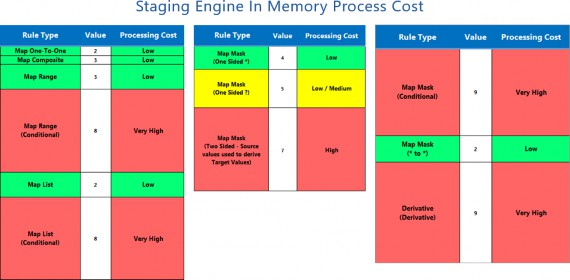
Figure 6.22
| Rule Type | Processing |
|---|---|
| Map One-To-One | Simple update pass through to the database. |
| Map Range | Simple update pass through to the database. |
| Map Range (Conditional) | Uses a lot of data transfer and memory utilization. Required to return a record set with all Dim fields back to the App Server to perform conditional mapping. |
| Map List | Simple update pass through to the database. |
| Map List (Conditional) | Uses a lot of data transfer and memory utilization. Required to return a record set with all Dim fields back to the App Server to perform conditional mapping. Keep LIST least restrictive. Break list into multiple, smaller lists for optimal memory utilization and faster rules processing. |
| Map Mask * | Use one-sided * for low processing overhead. Simple update pass through to the database. |
| Map Mask ? | Simple update pass through to the database. Use one-sided ? for low/medium processing overhead. Masking queries must use table scans which can hurt performance on large record volumes. Keep total number of ? to a minimum. More ? causes longer time for Database Engine to process the mask. |
| Map Mask * to * | Processes very quickly. Simple update pass through to the database. |
| Map Mask (Conditional) | Uses a lot of data transfer and memory utilization. Required to return a record set with all Dim fields back to the App Server to perform conditional mapping. Keep Mask criteria restrictive. Limit each query to a small chunk. Example: 1*, 2*, A*, B* |
| Derivative | Uses a lot of data transfer and memory utilization. Required to return a record set with all Dim fields back to the App Server to perform conditional mapping. Executes a SQL Statement that pulls ALL Dimension fields from worktable with a LIKE clause as main criteria and passes records back to Application Server. Required for Application Server to derive the calculated rows. New records are inserted into the worktable one by one. |
Figure 6.23
Data Integration
ODBC Connectors and Rest API
With ledgers moving to the cloud, there are a lot of products out there that can be used to connect to cloud-based software and ledger systems directly. I have been able to connect to multiple products using ODBC connectors by third parties – for QuickBooks and other products – from vendors including QODBC and CData.
These products do take some knowledge of SQL and some time to set up, but once set up, they work on-demand. They also require some knowledge of the product and tables and stored procedures. I found them to be useful but more complicated than using a REST API. However, with our Azure cloud offering, this becomes more problematic from a security point of view and is not available to customers hosting in Azure.
Most cloud products have a REST API, which allows you to directly connect with the product, albeit with some barriers (e.g., IDs and passwords) that are needed at a nominal cost. There a number of Rest APIs that have samples. Some of those ledgers or source systems include Sage Intact, Salesforce, Workday, SAP, Dynamicx AX, and Hubspot. Some software providers ask you to buy the developer license in order to get the necessary credentials and their protections for your data; not just anyone can get to them. Credentials are typically needed to get back data in an XML Format before it can be read and parsed in a Connection Business Rule.
Data Integration
Automation with Batch process
OneStream has the ability to fully process files through the Workflow by using Batch Processing. Files can be prepared with a naming convention that can be used to auto load. By dropping a file into the Harvest directory, and with a specified interval, batch files can be loaded into OneStream. This works well for fixed, delimited, and Excel files. Blank files can be created for connection formats and the Data Management Export sequences.
Data Integration › Automation with Batch process
Field Layout:
File ID-WorkflowProfileName-ScenarioName-TimeName-LoadMethod.txt
Data Integration › Automation with Batch process
File Name Example:
1TB-Detroit;Import-Actual-2011M1-R.txt
Data Integration
Future State – Machine Learning
OneStream is moving to the next stage of its evolution by loading data to machine learning portals such as Watson and Microsoft Azure Machine Learning. These systems can generate complex models on the impact of weather on sales, or the impact of holidays on sales. Such solutions require a data scientist to develop solutions, but OneStream can facilitate the computations behind these solutions, and return the data to OneStream for consumption and reporting.
Data Integration
Conclusion
Data Integration is the foundation of all the data that can be reported through OneStream. Managing data, and deciding upon the level and detail of data, is a large part of any design. Don’t unnecessarily populate the system with data you don’t need; use OneStream to analyze all the data you have. If you need to investigate, you can drill back to larger data sources and warehouses. You can get any data into this system, and roll it up and report on it in many different ways. Controlled, organized data should be your primary focus when building the platform.
Data Integration
Epilogue
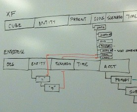
This photo is from September 13, 2011, when the original team was performing the first implementation of OneStream. The group was discussing metadata design for the application, and mapping from the legacy source system of Hyperion Enterprise to consume the historical data and the Dimension mapping from Enterprise to OneStream.
Our first customer wanted 14 years of data reconciled, and that was extreme. But it allowed the customer to retire its legacy system forever, and allowed us to test the system with the volume of data. The funny thing is that, as a consultant, I loaded and reconciled their prior system 14 years before that. The same data was reconciled twice, by the same person, 14 years apart.
This second photo is from our May 2017 Splash Conference. It was a big moment when we arrived and saw our name – up in lights – at the Hard Rock Hotel.
It was also one of those moments, as a startup, when you just have to laugh. We had just reached 100 employees, 75+ of whom were coming from different parts of the world, and all the corporate credit cards were being rejected for each US-based employee (as the pre-payment authorizations were being charged to a casino!). I had to call our bank to make sure they knew people were going to be staying there, and to authorize the charges!